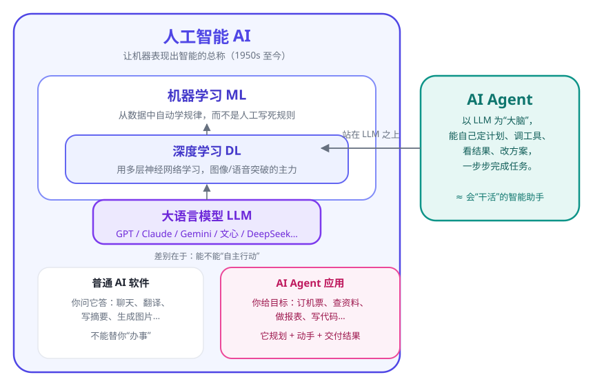
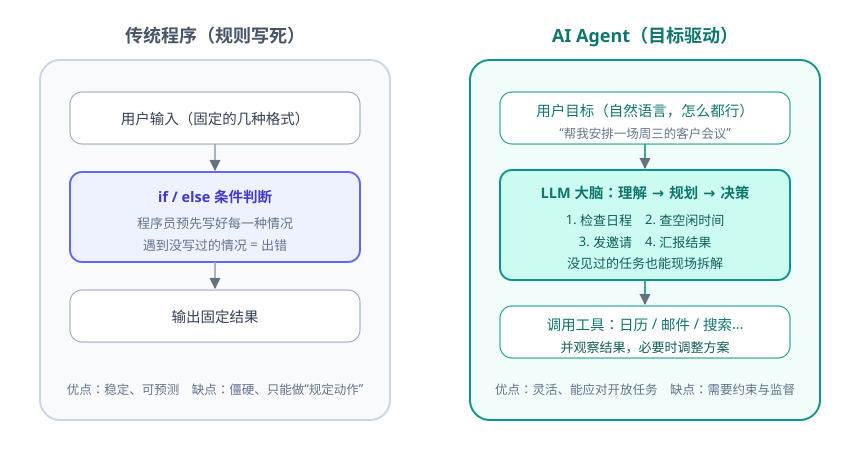

AI Agent（人工智能体 / 智能体）可以简单理解为：一个以 AI 为“大脑”、能自己定计划、调用工具、一步步把事情做完的软件。它不是又一个聊天机器人，而是会“干活”的助手。
从一个生活例子开始
假设你要订一份外卖：
🤖 普通聊天机器人：
你问“附近有什么好吃的”，它给你一堆餐厅介绍。剩下的事——比较、下单、付款——还是你自己做。
你问“附近有什么好吃的”，它给你一堆餐厅介绍。剩下的事——比较、下单、付款——还是你自己做。
🤖 AI Agent：
你说“帮我按预算 50 元订一份评分最高的川菜，40 分钟内送到”。它会自己搜索 → 比较 → 下单 → 付款 → 告诉你结果。中途外卖没了，它还会自动换一家。
你说“帮我按预算 50 元订一份评分最高的川菜，40 分钟内送到”。它会自己搜索 → 比较 → 下单 → 付款 → 告诉你结果。中途外卖没了，它还会自动换一家。
两者的差别不在“会不会聊天”，而在能不能为了一个目标，自主地完成一连串动作。
先理清一串名词：AI → ML → DL → LLM → Agent
网上这些词经常混着用，其实它们是层层包含的关系：

- 人工智能（AI）：让机器表现出智能的总称，从上世纪 50 年代就开始了。
- 机器学习（ML）：AI 的一个分支——不写死规则，而是让程序从数据里自己学规律。
- 深度学习（DL）：机器学习里最成功的一支，用“多层神经网络”学习，图像识别、语音、翻译都靠它突破。
- 大语言模型（LLM）：深度学习在“读海量文字”上的产物，代表有 GPT、Claude、Gemini、DeepSeek 等。它擅长理解和生成自然语言。
- AI Agent：把 LLM 当“大脑”，再接上工具和记忆，让它能自己完成任务的软件。
传统软件 vs AI Agent

Agent 的共同特征
- 理解目标：能听懂你用大白话提出的要求。
- 自主规划：把大目标拆成小步骤，自己决定先做什么。
- 会使用工具：搜索、查数据库、操作软件、读写文件、执行代码。
- 观察与调整：看结果，失败了就换一种方法，直到完成或放弃。
- 有边界：好的 Agent 知道什么时候该停下来问人，而不是闷头乱干。
你其实已经见过 Agent 了
| 例子 | 它做了什么 |
|---|---|
| ChatGPT 网页版（联网/工具模式） | 搜索网页、汇总资料、生成图表 |
| Codex / Claude Code 等编程助手 | 读代码 → 改代码 → 运行测试 → 修 bug，闭环干活 |
| 手机语音助手（进阶形态） | 帮你设闹钟、查路线、发消息 |
| 自动驾驶 | 感知路况 → 规划路线 → 控制车辆，实时循环 |
| 智能客服 / 自动化运维 | 根据问题自助排查、调用系统处理 |
常见疑问
Q：Agent 和聊天机器人到底差在哪？
A：聊天机器人“动嘴”，Agent“动手”。判断标准很简单——它能不能自己完成一连串操作并交付结果。
A：聊天机器人“动嘴”，Agent“动手”。判断标准很简单——它能不能自己完成一连串操作并交付结果。
Q：我是零基础，需要先学编程吗？
A：不需要。前两周我们用“会聊天 + 会用工具”的方式学概念（很多平台都能直接体验 Agent）；到第 7 天再动手写一个非常小的程序，也只需要跟着抄。编程在后面会变成你的优势，但不是起点。
A：不需要。前两周我们用“会聊天 + 会用工具”的方式学概念（很多平台都能直接体验 Agent）；到第 7 天再动手写一个非常小的程序，也只需要跟着抄。编程在后面会变成你的优势，但不是起点。
Q：学完 30 天我能做什么？
A：能自己设计并搭出一个解决真实问题的 Agent（比如个人知识库问答、办公自动化助手），并理解它的原理、边界和风险。
A：能自己设计并搭出一个解决真实问题的 Agent（比如个人知识库问答、办公自动化助手），并理解它的原理、边界和风险。
✍️ 今日练习（约 10 分钟）
- 想一想你工作/生活中重复、费时、多步骤的一件事（比如整理周报、对比价格、收集资料）。
- 用一句话写下：如果有个 Agent，你会让它帮你做什么？它需要用到哪些“工具”？
- 打开任意一个带联网功能的 AI 助手，对它说：“帮我搜索并总结一下今天 AI Agent 领域发生了什么”，观察它是怎么一步步完成的。
- 把第 1 题的答案记在手机备忘录里——它就是你的 30 天毕业设计选题池。
📌 今日小结
AI Agent= AI 大脑（LLM）+ 规划 + 工具 + 记忆，能自主完成任务
层级关系AI ⊃ 机器学习 ⊃ 深度学习 ⊃ LLM；Agent 站在 LLM 之上
与传统软件的区别传统程序做“规定动作”；Agent 是“目标驱动”，自己拆解与调整
判断标准能不能自己完成一连串操作并交付结果
明天预告：Agent 的“大脑”到底是怎么工作的？我们会拆开大语言模型，看看它凭什么能“听懂人话”。